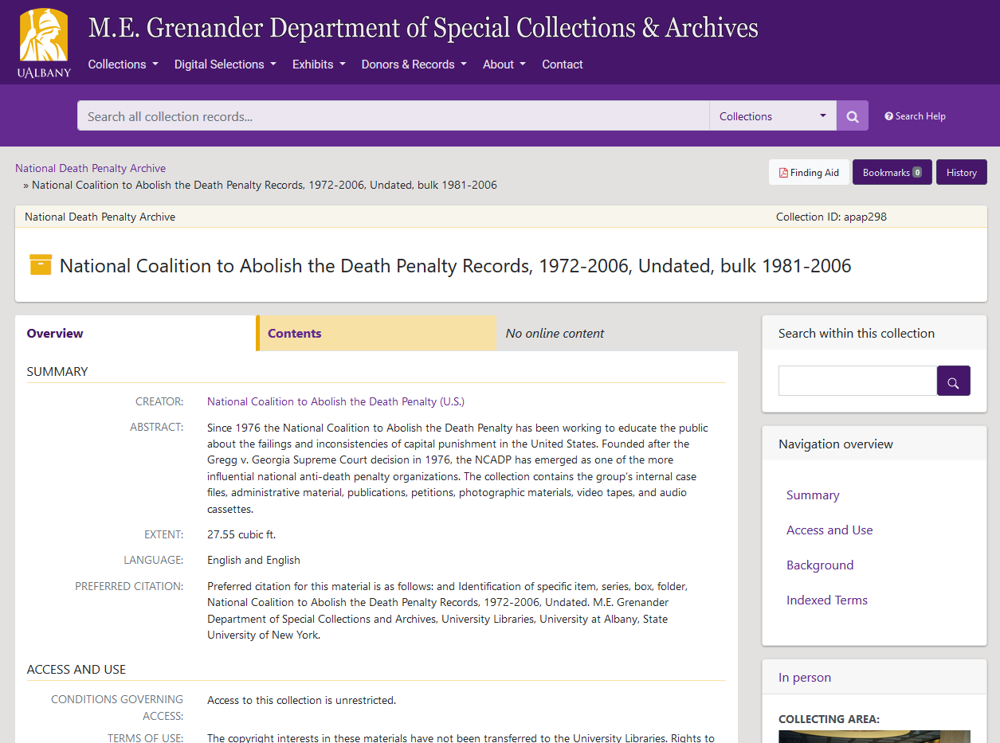

<!DOCTYPE html>
<html lang="en">
  <head>
    <meta charset="utf-8" />
    <meta name="viewport" content="width=device-width, initial-scale=1.0, maximum-scale=1.0, user-scalable=no" />

    <title>Integrating ArchivesSpace and ArcLight</title>
    <link rel="stylesheet" href="./css/reveal.css" />
    <link rel="stylesheet" href="./css/theme/moon.css" id="theme" />
    <link rel="stylesheet" href="./css/highlight/zenburn.css" />
    <link rel="stylesheet" href="./css/print/paper.css" type="text/css" media="print" />

  </head>
  <body>
    <div class="reveal">
      <div class="slides"><section  data-markdown><script type="text/template">
<style>
#fLeft {float: left; max-width: 50%;}
#fRight {float: right; max-width: 50%;}
#smallLink {font-size: 18px;}
.whitebg {background-color: #fff; margin-top: 30% !important; padding: 15px !important; border-radius: 15px;}
.reveal section img {border: none;}
.reveal h1,
.reveal h2,
.reveal h3,
.reveal h4,
.reveal h5,
.reveal h6 {
	font-family: "Montserrat", Roboto , sans-serif;
	text-transform: initial;
	font-weight: bold;
}
.wrap{
position:relative;
  height:30vh;
  border-left:15px solid #000;
  padding:5vh 20px;
}
.arrow {
  position:absolute;
  left:-43px;
  width: 70px;
  bottom: -20px;
}
.up{top:-20px;}
</style>

## Integrating ArchivesSpace and ArcLight

[gregwiedeman.com/slides/integrate.html](https://gregwiedeman.com/slides/integrate.html)

Gregory Wiedeman<br/>
University Archivist<br/>
University at Albany, SUNY

</script></section><section  data-markdown><script type="text/template">
### Why use ASpace and ArcLight

<div id="fLeft">
<ul>
<li>Archives usability is poor</li>
<li>Multiple points of discovery</li>
<li>Need experimentation, iteration</li>
</ul>
</div>
<div id="fRight">
<video width="100%" height="100%" autoplay controls>
  <source src="scroll.webm" type="video/webm">
</video>
</div>
</script></section><section  data-markdown><script type="text/template">
### Things to try!

* A single point of discovery
* Use archival description for discovery of online content
	* Digitized material
	* Born-digital
	* Without item-level description
</script></section><section  data-markdown><script type="text/template">
### The Bigger Picture

<div id="fLeft">
<div class="wrap">
  <svg class="arrow down" viewbox="0 0 7 10">
    <path d="M3.5 10 L7 0 Q3.5 3 0 0z"/>
  </svg>
</div>
</div>
<div style="float:left">
	<ul>
	<li>Collection Context</li>
		<ul>
			<li>Series Context</li>
				<ul>
					<li>File record</li>
					<ul>
						<li>Digital object</li>
						<ul>
							<li>Automated metadata</li>
							<li>Timestamps</li>
							<li>Extracted entities</li>
						</ul>
					</ul>
				</ul>
		</ul>
	</ul>
</div>
<div id="fRight">
<div class="wrap">
  <svg class="arrow up" viewbox="0 0 7 10">
    <path d="M3.5 0 L7 10 Q3.5 7 0 10z"/>
  </svg>
</div>
</div>
</script></section><section  data-markdown><script type="text/template">
### Why not ASpace PUI?

* Complex for development
* Includes both Archivist and User functionality
* Customizations often affect other functions
* ASpace is great for data intergration, but challenging to intergrate user experience with other systems
</script></section><section  data-markdown><script type="text/template">
### Integrations Principles

* Separation of concerns
	* Do one thing
* Boilerplate implementations
	* Try to keep integeration outside of systems
* Networks of open systems
</script></section><section  data-markdown><script type="text/template">
### Why ArcLight

<div id="fLeft">
<ul>
<li>Does one thing</li>
	<ul>
	<li>presents Solr data</li>
	<li>Public-data only</li>
	</ul>
<li>Built for aggregate description</li>
<li>Familiar technology</li>
<li>Open API is useful</li>
</ul>
</div>
<div id="fRight">
	<a href="https://archives.albany.edu/description/catalog/apap298"></a>

</div>

</script></section><section  data-markdown><script type="text/template">
### How do the connections work?


</script></section><section  data-markdown><script type="text/template">
### How do the connections work?

* [ASpace-ArcLight workflow](https://github.com/UAlbanyArchives/ArchivesSpace-ArcLight-Workflow)
	* Overnight or manual EAD export
	* Uses ArchivesSnake!
	* Index shell script
	* [Documentation](https://wiki.albany.edu/display/SCA/Overnight+Export+and+Indexing+Scripts)
* [Collections Github repo](https://github.com/UAlbanyArchives/collections)
</script></section><section  data-markdown><script type="text/template">
### What does this look like?

* Resource in ASpace
* [Collection in ArcLight](https://archives.albany.edu/description/catalog/ua200)
	* Individual levels
	* Blacklight features like facets
* [Single point of discovery](https://archives.albany.edu/)
* DAO in ASpace
* [Digital Object in Hyrax](https://archives.albany.edu/concern/daos/6d56zx17z)
* Two-way client-side integration
 </script></section><section  data-markdown><script type="text/template">
### Digital Object Upload

* Upload a [Commencement Program](https://archives.albany.edu/description/catalog/ua935)
* [Documentation](https://wiki.albany.edu/display/SCA/Uploading+Digital+Objects+to+Hyrax)

</script></section><section  data-markdown><script type="text/template">
### Limitations

<video width="100%" height="100%" autoplay controls>
  <source src="scroll.webm" type="video/webm">
</video></script></section><section  data-markdown><script type="text/template">
### Usability Issues

* [Tabs! Context! Loops!](https://archives.albany.edu/description/catalog/ua500)
* [Collections/Digital Selections](https://archives.albany.edu/search/)
* [UAlbany ArcLight Update and Outlook](https://gregwiedeman.com/2018/11/19/arclight-update.html)
* [UAlbany ArcLight Usability Analysis](https://docs.google.com/document/d/1etPr-b1B13nwuDa0eXgKrYXFAzZ5vvYJ_NS7VmbrBxI/edit)
* Addressed during [ArcLight Phase II work cycle](https://library.stanford.edu/blogs/digital-library-blog/2017/06/arclight-mvp-work-cycle-completed)
* [UM Bentley Feedback](https://docs.google.com/document/d/1HN5CLUFuFJ1m37KgFQ2w3LBZbuz5E0YzRE3_v42_nIg)
* Could add new design features to ASpace PUI

</script></section><section  data-markdown><script type="text/template">
###  Integrating ArchivesSpace and ArcLight

* [Single Point of Discovery](https://archives.albany.edu)
* [ArcLight](https://archives.albany.edu/description/)
* [Hyrax](https://archives.albany.edu/catalog)
* [Documentation Site](https://wiki.albany.edu/pages/viewpage.action?pageId=80544001)

Gregory Wiedeman<br/>
University Archivist<br/>
University at Albany, SUNY
</script></section></div>
    </div>

    <script src="./js/reveal.js"></script>

    <script>
      function extend() {
        var target = {};
        for (var i = 0; i < arguments.length; i++) {
          var source = arguments[i];
          for (var key in source) {
            if (source.hasOwnProperty(key)) {
              target[key] = source[key];
            }
          }
        }
        return target;
      }

      // Optional libraries used to extend on reveal.js
      var deps = [
        { src: './plugin/markdown/marked.js', condition: function() { return !!document.querySelector('[data-markdown]'); } },
        { src: './plugin/markdown/markdown.js', condition: function() { return !!document.querySelector('[data-markdown]'); } },
        { src: './plugin/highlight/highlight.js', async: true, callback: function() { hljs.initHighlightingOnLoad(); } },
        { src: './plugin/zoom-js/zoom.js', async: true },
        { src: './plugin/notes/notes.js', async: true },
        { src: './plugin/math/math.js', async: true }
      ];

      // default options to init reveal.js
      var defaultOptions = {
        controls: true,
        progress: true,
        history: true,
        center: true,
        transition: 'default', // none/fade/slide/convex/concave/zoom
        dependencies: deps
      };

      // options from URL query string
      var queryOptions = Reveal.getQueryHash() || {};

      var options = extend(defaultOptions, {"transition":"fade"}, queryOptions);
    </script>


    <script>
      Reveal.initialize(options);
    </script>
  </body>
</html>
